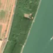

3,2 ha · Brăilița, com. Vădeni
văzută schimbată prima dată pe 26 apr. 2026

Autorizația cea mai apropiată nu acoperă tăierea: schimbarea cade în afara parcelei autorizate.
APV 2500130300050 · Ocolul Silvic Brăila, valabilă 2 dec. 2025 – 31 ian. 2026, la 82 m
Terenul: pădure de stat, după amenajamentul silvic publicat.
Ce se vede în poze: În poza detaliată din 2019, zona marcată era acoperită de pădure deasă, iar în «după» apare o pată deschisă, deschisă la culoare, în mijlocul fâșiei verzi de pădure. Pare că arborii au fost tăiați, dar lângă Dunăre ar putea fi și apă sau mâl, deci nu este sigur.